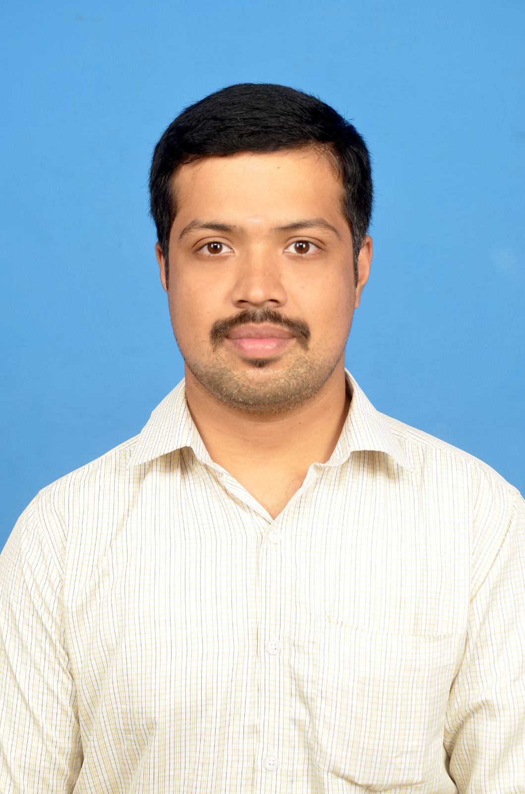

System Engineer | Windows & Linux Administrator | DevOps Support Engineer
About Me Senior System Engineer with 11+ years of experience in enterprise infrastructure, production support,
and IT operations.Extensive expertise in Windows/Linux systems, Active Directory, monitoring, and
incident management, with a strong track record of troubleshooting and maintaining critical systems. |  |
TECHNICAL SKILLS |
|
| • Cloud Platforms: AWS (EC2, S3, IAM, VPC, ECR, EKS), Azure (Basics) | • DevOps Tools: Docker, Jenkins, Git/GitHub, CI/CD Pipelines |
| • Container & Orchestration: Docker, Kubernetes (EKS - Project level) | • Monitoring & Logging: CloudWatch, uptime-kuma |
| • Operating Systems: Linux, Windows Server, Windows 10/11 | • Infrastructure & Identity: Active Directory, SCCM, Group Policy, MDT |
| • Networking: TCP/IP, DNS, DHCP (CCNA Fundamentals) | • Scripting & Automation: PowerShell, Bash (Basic Automation) |
PROFESSIONAL EXPERIENCE |
|
FCOOS Technologies,BangaloreSYSTEM ENGINEER |
2024 - Present |
| • Providing L1/L2 system and infrastructure support for enterprise users in production environments. • Assisted in deployment troubleshooting and environment readiness for applications. • Performed log analysis and root-cause identification for system and service issues. • Used Linux commands and scripting for issue diagnosis and operational tasks. • Monitoring system health, services, and end-user issues to ensure high availability and SLA compliance. • Managing Windows OS support, user access, and troubleshooting hardware/software issues. • Coordinating with internal IT teams and vendors for issue resolution and change activities. • Maintaining operational documentation, incident records, and system logs. • Supporting both on-site and remote users with desktop and system-related requests. |
|
Oasys Cybernetics Pvt Ltd & I-Source Infosystem Pvt LtdSYSTEM ENGINEER |
2020 - 2024 |
| • Delivered 24/7 production infrastructure support for enterprise environments. • Installed and configured Windows 10/11 OS via network using MDT Toolkit. • Managed Active Directory, user provisioning, Group Policy updates, and first-login configurations. • Worked with SCCM policy cycles, compliance checks, and system updates. • Performed domain re-joining, Azure AD sync status verification, and soft-lock checks using PowerShell. • Troubleshot BSOD issues, driver conflicts, Windows patching, and security updates. • Provided hands-on support for desktops, laptops, POS machines, and AV equipment. • Collaborated with L2/L3 teams, network teams, and application teams for faster issue resolution. • Maintained 99% SLA compliance and high customer satisfaction levels. Key Achievements • Improved operational efficiency by 30% through structured troubleshooting. • Consistently achieved 95%+ customer satisfaction ratings. | |
Microtech Infoserver Pvt Ltd & IDC Technologies Pvt LtdDESKTOP SUPPORT ENGINEER |
2016 - 2018 |
| • Assembled, configured, and supported PCs, printers, routers, modems, and switches across multiple
banking branches. • Monitored network connectivity using ping, traceroute, and puTTY. • Configured MS Outlook, applied Windows patches, and resolved OS/application issues. • Managed hardware assets under warranty and coordinated vendor support. • Ensured minimal downtime in banking environments with strict SLAs. |
|
Endeavour IT Services Pvt Ltd., MaduraiDATA ENTRY OPERATOR |
2014 - 2016 |
| • Performed customer data verification and activation in telecom systems. • Maintained accuracy and compliance with operational procedures. |
|
PROJECTS |
|
| • DevOps CI/CD Pipeline Built CI/CD pipelines using Jenkins, Docker, Kubernetes (AWS EKS) Automated build and deploy |
|
| • AWS CI/CD Pipeline Implemented pipeline using AWS CodePipeline, CodeBuild, ECR, EKS Deployed containerized applications and monitored using CloudWatch |
|
| • Jenkins & Docker Deployment Automated Docker image build and deployment using Jenkins Deployed application on AWS EC2 with monitoring using uptime-kuma (open-source) |
|
| • AI Voice Assistant Developed a voice-enabled chatbot using FastAPI, OpenRouter API, and Web Speech APIs Implemented real-time speech-to-text, AI response, and text-to-speech with API integration and error handling . |
|
CERTIFICATIONS |
|
| • DevOps Program - GUVI (HCL Collaboration) | • AWS Cloud Quest - Cloud Practitioner (Trained) |
| • CompTIA Linux+ (XK0-005) | • CompTIA A+ (220-1101 - Core 1) |
| • CCNA - Basics (IIHT) | • Cybersecurity - Tech Mahindra Foundation (Skill India), |
| • AI Appreciate 2025 - Intel (AI for All) | |
EDUCATION |
|
| • Master of Computer Applications (MCA) KLNCIT, Madurai | 2011 - 2014 | |
| • Information Technology (BSc IT) Madurai Kamaraj University, Madurai | 2008 - 2011 | |
Email: prabusr1988@gmail.com
GitHub: GITHUB
Home:Home